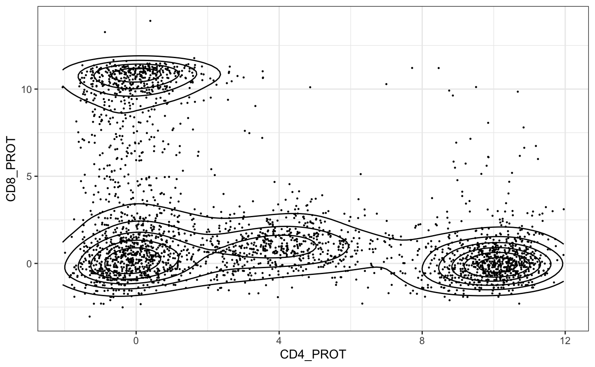

vignettes/dsb_normalizing_CITEseq_data.Rmd
dsb_normalizing_CITEseq_data.RmdDetailed usage of the DSB package for normalizing CITEseq data
You can install the released version of dsb in your R session with the command below
# this is analagous to install.packages("package"), you have the package "devtools" to install a package from a github repository like this one.
require(devtools)
#> Loading required package: devtools
suppressMessages(devtools::install_github(repo = 'MattPM/dsb'))
#>
#>
checking for file ‘/private/var/folders/x3/7pt6p1sj1qbgz88nvyts3k840000gn/T/RtmpOZdOlp/remotes6fcf4b55fe62/MattPM-dsb-8b76600/DESCRIPTION’ ...
✔ checking for file ‘/private/var/folders/x3/7pt6p1sj1qbgz88nvyts3k840000gn/T/RtmpOZdOlp/remotes6fcf4b55fe62/MattPM-dsb-8b76600/DESCRIPTION’
#>
─ preparing ‘dsb’:
#>
checking DESCRIPTION meta-information ...
✔ checking DESCRIPTION meta-information
#>
Warning: /private/var/folders/x3/7pt6p1sj1qbgz88nvyts3k840000gn/T/RtmpYqq8Lh/Rbuild6fe63fc1cb67/dsb/man/cells_citeseq_mtx.Rd:8: unexpected TEXT ' ', expecting '{'
#>
Warning: /private/var/folders/x3/7pt6p1sj1qbgz88nvyts3k840000gn/T/RtmpYqq8Lh/Rbuild6fe63fc1cb67/dsb/man/empty_drop_citeseq_mtx.Rd:8: unexpected TEXT ' ', expecting '{'
#>
─ checking for LF line-endings in source and make files and shell scripts
#>
─ checking for empty or unneeded directories
#> ─ looking to see if a ‘data/datalist’ file should be added
#>
─ building ‘dsb_0.1.0.tar.gz’
#>
#> Workflow for usage with Seurat version 3 This is a simple but comprehensive example of loading the output from CITEseq-count, reading in the output from Cellranger (mRNA), merging all the assays together, demultiplexing hashing data to get negative droplets, adding the negative droplets, using the negative droplets to normalize with the DSBNormalizeProtein function, and adding those normalized counts back to an object containing normalized singlets.
Many thanks to Can Liu for testing the DSB package and helping assemble this vignette
suppressMessages(library(dsb))
suppressMessages(library(Seurat))
#> Warning: replacing previous import 'mclust::dmvnorm' by 'mvtnorm::dmvnorm'
#> when loading 'fpc'
suppressMessages(library(dplyr))
suppressMessages(library(magrittr))Read the output from CITE-seq-count and raw_bc_matrix from cellranger
It is highly recommended that you load the raw_feature_bc_matrix from cellranger, not the filtered_bc_matrix. It is not clear whether the cellranger filtering will accomodate doublets in a superloading (i.e. hashing or multiseq) experiment. More importantly, demultiplexing functions such as HTODemux estimate the background distribution for each cell a k medioids clustering method using k = 1 + n HTO in order to find the negative cells which are then used to establish a threshold for positivity of each HTO. Without sufficient negative droplets (i.e. if you use the filtered_bc_matrix) there may not be enough negative droplets to estimate the background causing the function to not converge. The empty droplets are also crucial for the DSB notmalization step so having more empty droplets makes the protein background estimation more robust.
## Part 1 read in CITE-seq-count output
# Run CITEeq count with expect cells set higher than your actual expected loading
# e.g. if expect 25K cells, set expect cells to 40K
# refer to the CITEseq count documentation page https://hoohm.github.io/CITE-seq-Count/
# read in HTO data (output from citeseq count)
hto_data = Read10X('citeseq_count/HTO_umi_40k/', gene.column=1)
# read in ADT data (output from citeseq count)
adt_data = Read10X('citeseq_count/ADT_umi_40k/', gene.column=1)
# read in mRNA data (output from 10x cellranger)
rna_data = Read10X(data.dir = "cellranger_count/raw_feature_bc_matrix/")
# get joint barcodes, subset RNA, HTO, ADT remove "unmapped" row in ADT and HTO assay (if using CITEseq count)
joint.bcs = Reduce("intersect", list(colnames(rna_data), colnames(hto_data), colnames(adt_data)))
rna_data = rna_data[, joint.bcs]
hto_data = as.matrix(hto_data[-nrow(hto_data), joint.bcs])
adt_data = as.matrix(adt_data[-nrow(adt_data), joint.bcs])Create a Seurat object and normalize
we now have 3 separate matrices, one for mRNA , protein and hashing data. Since this was a multiplesing experiment , we also have doublets, singlets and negative (empty) droplets. Here we demultiplex with the HTODemux function to get singlet, doublet and negative annotations for each cell. We then assign the protein data from the negative (empty) droplets and the actual cells (singlets) to variables, and use them in the DSBNormalizeProtein function.
If not using a sample demultiplexing method, we could create a seurat object with a very low threshold for number of genes per cell (i.e. 1), then use a dedicated package that estimates empty droplets (EmptyDrops) or use a threshold, e.g. all droplets with 0-40 genes detected are called as “empty” and are used to estimate the background (this could also be done with a statistical threshold; see the main readme page for the DSB package).
For more information vignettes on demultiplexing: https://satijalab.org/seurat/v3.1/hashing_vignette.html https://github.com/chris-mcginnis-ucsf/MULTI-seq
# create Seurat object using Seurat version 3
SeuratObject = CreateSeuratObject(counts = rna_data, project = "my_project")
SeuratObject[["HTO"]] = CreateAssayObject(counts = hto_data)
SeuratObject[["ADT"]] = CreateAssayObject(counts = adt_data)
# HTO demultiplex -- get the empty droplets from HTO demultiplex
SeuratObject = NormalizeData(SeuratObject, assay = "HTO", normalization.method = "CLR")
SeuratObject = HTODemux(SeuratObject, assay = "HTO", positive.quantile = 0.99)
table(SeuratObject$HTO_classification.global)
# empty droplets from HTO demultiplex as idents = "Negative"
Idents(SeuratObject) = "HTO_classification.global"
NegativeObject = subset(SeuratObject, idents = "Negative")
SNG_SeuratObject = subset(SeuratObject, idents = "Singlet")
# before normalizing make sure the negative droplets from hashing are true negatives.
# many ways to do this. Here is a simple heuristic:
NegativeObject = subset(NegativeObject, subset = nFeature_RNA < 40)
# get the empty droplet matrix and singlet matrix
neg_adt_matrix = GetAssayData(NegativeObject, assay = "ADT", slot = 'counts') %>% as.matrix()
positive_adt_matrix = GetAssayData(SNG_SeuratObject, assay = "ADT", slot = 'counts') %>% as.matrix()
# normalize the data with dsb normalization
isotypes = c("isotype_control_1_PROT", "isotype_control_2_PROT", "isotype_control_3_PROT", "isotype_control_4_PROT")
normalized_matrix = DSBNormalizeProtein(cell_protein_matrix = positive_adt_matrix,
empty_drop_matrix = neg_adt_matrix,
use.isotype.control = TRUE,
isotype.control.name.vec = isotypes)
# add normalized data back to the object (the singlets defined above as "object")
SNG_SeuratObject = SetAssayData(object = SNG_SeuratObject, assay = "ADT", new.data = normalized_matrix)
# proceed with downstream analysis.
#saveRDS(SNG_SeuratObject, file = "my_project_normalized.rds")Here is the format of the required input data.
class(cells_citeseq_mtx)
#> [1] "matrix"
cells_citeseq_mtx[27:37,1:2]
#> GAACGGATCGAATCCA_H1B1ln2 ATAGACCAGTCCATAC_H1B1ln3
#> CD303_PROT 1 5
#> CD32_PROT 6 9
#> CD357_PROT 1 1
#> CD366_PROT 6 3
#> CD39_PROT 4 6
#> CD40_PROT 5 3
#> CD57_PROT 4 13
#> CD62L_PROT 97 140
#> CD64_PROT 3 3
#> CD69_PROT 8 9
#> CD70_PROT 0 1You can see above that the input data is a matrix with cells as columns. The non normalized the protein assay of a Seurat object or Single Cell Experiment object is often a sparse matrix. You can easily convert it into a matrix
Empty drops are formatted the same way. This is a direct measurement of experimental noise that we correct for with the dsb normalization method.
# protein names in the example data
rownames(cells_citeseq_mtx)
#> [1] "AnnexinV_PROT" "BTLA_PROT"
#> [3] "CD117_PROT" "CD123_PROT"
#> [5] "CD13_PROT" "CD133_PROT"
#> [7] "CD134_PROT" "CD137_PROT"
#> [9] "CD141_PROT" "CD152_PROT"
#> [11] "CD161_PROT" "CD163_PROT"
#> [13] "CD18_PROT" "CD184_PROT"
#> [15] "CD19_PROT" "CD1c_PROT"
#> [17] "CD1d_PROT" "CD2_PROT"
#> [19] "CD206_PROT" "CD21_PROT"
#> [21] "CD223_PROT" "CD24_PROT"
#> [23] "CD244_PROT" "CD273_PROT"
#> [25] "CD294_PROT" "CD3_PROT"
#> [27] "CD303_PROT" "CD32_PROT"
#> [29] "CD357_PROT" "CD366_PROT"
#> [31] "CD39_PROT" "CD40_PROT"
#> [33] "CD57_PROT" "CD62L_PROT"
#> [35] "CD64_PROT" "CD69_PROT"
#> [37] "CD70_PROT" "CD71_PROT"
#> [39] "HLA-ABC_PROT" "HLA-DR_PROT"
#> [41] "IgA_PROT" "KLRG1_PROT"
#> [43] "TCRgd_PROT" "CX3CR1_PROT"
#> [45] "CD10_PROT" "CD11c_PROT"
#> [47] "CD138_PROT" "CD14_PROT"
#> [49] "CD16_PROT" "CD185_PROT"
#> [51] "CD195_PROT" "CD196_PROT"
#> [53] "CD197_PROT" "CD25_PROT"
#> [55] "CD27_PROT" "CD278 _PROT"
#> [57] "CD279_PROT" "CD31_PROT"
#> [59] "CD314 _PROT" "CD38_PROT"
#> [61] "CD4_PROT" "CD45RA_PROT"
#> [63] "CD56_PROT" "CD8_PROT"
#> [65] "IgD_PROT" "IgM_PROT"
#> [67] "MouseIgG1kappaisotype_PROT" "MouseIgG2akappaisotype_PROT"
#> [69] "Mouse IgG2bkIsotype_PROT" "RatIgG2bkIsotype_PROT"
#> [71] "CD103_PROT" "CD275_PROT"
#> [73] "CD28_PROT" "CD45RO_PROT"
#> [75] "CD5_PROT" "CD90_PROT"
#> [77] "CD11b_PROT" "CD127_PROT"
#> [79] "CD194_PROT" "CD274_PROT"
#> [81] "CD33_PROT" "CD7_PROT"
#> [83] "CD80_PROT" "CD86_PROT"
#> [85] "CD183_PROT" "CD34_PROT"
#> [87] "CD20_PROT"
# the isotype controls are index 67 - 70 in this experiment.
isotypes = rownames(cells_citeseq_mtx)[67:70]
isotypes
#> [1] "MouseIgG1kappaisotype_PROT" "MouseIgG2akappaisotype_PROT"
#> [3] "Mouse IgG2bkIsotype_PROT" "RatIgG2bkIsotype_PROT"This takes about 8 seconds on a laptop. The method scales well to increased cell numbers (a few minutes to normalize a 50,000 cell dataset) with the slowest part of the script being the per-cell mixture model using the mclust package.
# the isotypes were defined above
# isotypes = c("Mouse IgG2bkIsotype_PROT", "MouseIgG1kappaisotype_PROT","MouseIgG2akappaisotype_PROT", "RatIgG2bkIsotype_PROT")
normalized_matrix = DSBNormalizeProtein(cell_protein_matrix = cells_citeseq_mtx,
empty_drop_matrix = empty_drop_citeseq_mtx,
use.isotype.control = TRUE,
isotype.control.name.vec = isotypes)
# examine the normalized values.
normalized_matrix[27:37,1:2]
#> GAACGGATCGAATCCA_H1B1ln2 ATAGACCAGTCCATAC_H1B1ln3
#> CD303_PROT -1.26428471 1.65042534
#> CD32_PROT -3.28403477 -0.67852898
#> CD357_PROT -1.25744634 -0.96019055
#> CD366_PROT -0.35994530 -0.63616534
#> CD39_PROT -3.10804059 -0.27371655
#> CD40_PROT -0.02171297 -0.08506246
#> CD57_PROT -2.08329200 0.44888796
#> CD62L_PROT 11.10775135 12.84111544
#> CD64_PROT -3.78263849 -1.65680168
#> CD69_PROT -0.94835757 0.27614132
#> CD70_PROT -1.47050086 -0.10164575
# to plot the data in ggplot we need to make the proteins the variables (columns)
data.plot = normalized_matrix %>%
t %>%
as.data.frame() %>%
dplyr::select(CD4_PROT, CD8_PROT, CD27_PROT, CD19_PROT)
library(ggplot2)
ggplot(data.plot, aes(x = CD4_PROT, y = CD8_PROT)) +
geom_point(size = 0.2) +
geom_density_2d(color = "black") +
theme_bw()
There are a number of ways to get the empty drops. If you are using cell hashing, when you demultiplex the cells, you get a vector of empty or Negative droplets; see the workflow above.
HTODemux function in Seurat: https://satijalab.org/seurat/v3.1/hashing_vignette.html
deMULTIplex function from Multiseq (this is now also implemented in Seurat). https://github.com/chris-mcginnis-ucsf/MULTI-seq
If you’re not multiplexing you can simply get a vector of negative droplets from the cells you would remove. https://genomebiology.biomedcentral.com/articles/10.1186/s13059-019-1662-y
# get the ADT counts using Seurat version 3
seurat_object = HTODemux(seurat_object, assay = "HTO", positive.quantile = 0.99)
Idents(seurat_object) = "HTO_classification.global"
neg_object = subset(seurat_object, idents = "Negative")
singlet_object = subset(seurat_object, idents = "Singlet")
# non sparse CITEseq data actually store better in a regular materix so the as.matrix() call is not memory intensive.
neg_adt_matrix = GetAssayData(neg_object, assay = "CITE", slot = 'counts') %>% as.matrix()
positive_adt_matrix = GetAssayData(singlet_object, assay = "CITE", slot = 'counts') %>% as.matrix()
# normalize the data with dsb
# make sure you've run devtools::install_github(repo = 'MattPM/dsb')
normalized_matrix = DSBNormalizeProtein(cell_protein_matrix = positive_adt_matrix,
empty_drop_matrix = neg_adt_matrix)
# now add the normalized dat back to the object (the singlets defined above as "object")
singlet_object = SetAssayData(object = singlet_object, slot = "CITE", new.data = normalized_matrix)As an additional QC step one can confirm the cells called as “Negative” have low RNA / gene content to be certain there are no contaminating cells.
Also it is not necessary but we reccomend hash demultiplexing with the raw output from cellranger rather than the processed output (i.e. outs/raw_feature_bc_matrix) will have more empty droplets from which the HTODemux function will be able to estimate the negative distribution. This will also have the benefit of creating more droplets to use as built protein background controls in the DSB function.
# get the ADT counts using Seurat version 3
seurat_object = HTODemux(seurat_object, assay = "HTO", positive.quantile = 0.99)
neg = seurat_object %>%
SetAllIdent(id = "hto_classification_global") %>%
SubsetData(ident.use = "Negative")
singlet = seurat_object %>%
SetAllIdent(id = "hto_classification_global") %>%
SubsetData(ident.use = "Singlet")
# get negative and positive ADT data
neg_adt_matrix = neg@assay$CITE@raw.data %>% as.matrix()
pos_adt_matrix = singlet@assay$CITE@raw.data %>% as.matrix()
# normalize the data with dsb
# make sure you've run devtools::install_github(repo = 'MattPM/dsb')
normalized_matrix = DSBNormalizeProtein(cell_protein_matrix = pos_adt_matrix,
empty_drop_matrix = neg_adt_matrix)
# add the assay to the Seurat object
singlet = SetAssayData(object = singlet, slot = "CITE", new.data = normalized_matrix)you can simply get a vector of negative droplets from the cells you would remove. There robust ways to estimate which cells are empty droplets: https://genomebiology.biomedcentral.com/articles/10.1186/s13059-019-1662-y
Again, if using 10X and cellranger it is important to not filter out all of the empty droplets.
There are 2 parameters you can tune to increase the number of cells recoverd per lane. https://support.10xgenomics.com/single-cell-gene-expression/software/pipelines/latest/using/count –expect-cells (optional) Expected number of recovered cells. Default: 3,000 cells. –force-cells (optional) Force pipeline to use this number of cells, bypassing the cell detection algorithm. Use this if the number of cells estimated by Cell Ranger is not consistent with the barcode rank plot.
Below is a quick method to get outlier empty droplets assuming seurat_object is a object with most cells (i.e. any cell expressing at least a gene).
# get the nUMI from a seurat version 3 object
umi = seurat_object$nUMI
# Get the nUMI from a Seurat version 2 objec
umi = seurat_object@meta.data %>% select("nUMI")
mu_umi = mean(umi)
sd_umi = sd(umi)
# calculate a threshold for calling a cell negative
sub_threshold = mu_umi - (5*sd_umi)
Idents(seurat_object) = "nUMI"
# define the negative cell object
neg = subset(seurat_object, accept.high = sub_threshold)This negative cell object can be used to define the negative background following the examples above.